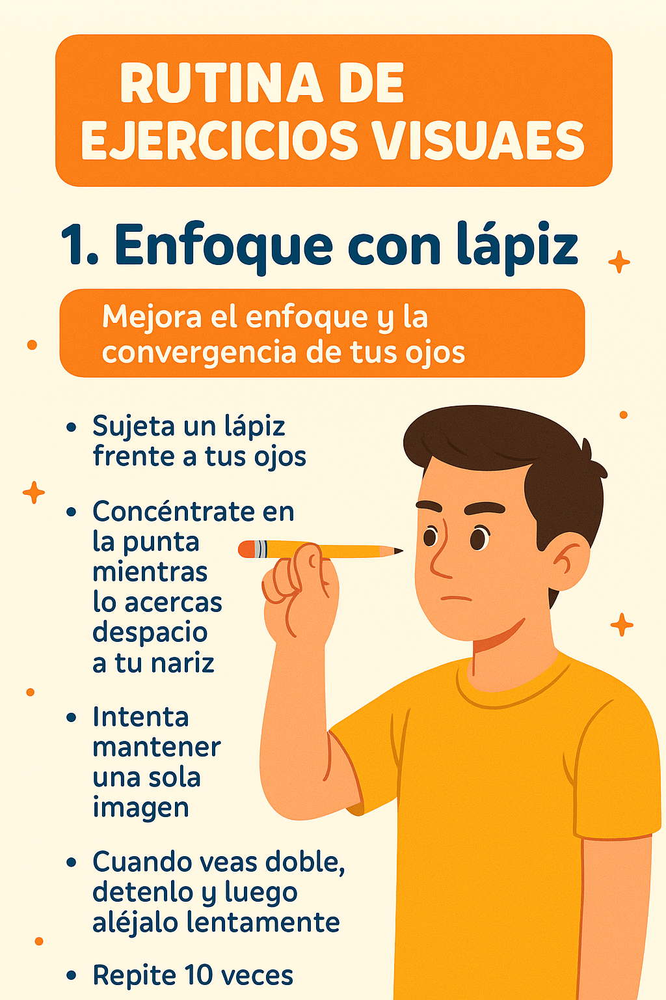

1. Enfoque con Lápiz

- Busca un lápiz y sujétalo frente a tus ojos.
- Mira la punta mientras lo acercas lentamente a tu nariz.
- ¡Intenta que se mantenga enfocado y no se doble!
- Cuando se vea doble, detente. Mantén esa distancia unos segundos.
- Luego, aléjalo lentamente. ¡Bien hecho!
- Haz esto 10 veces, dos veces al día.
Siguiente ejercicio